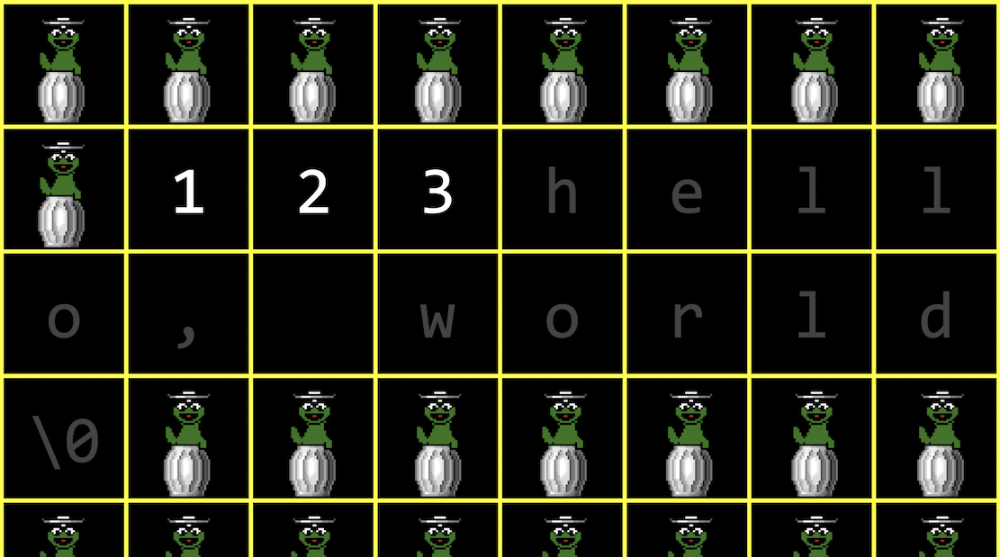
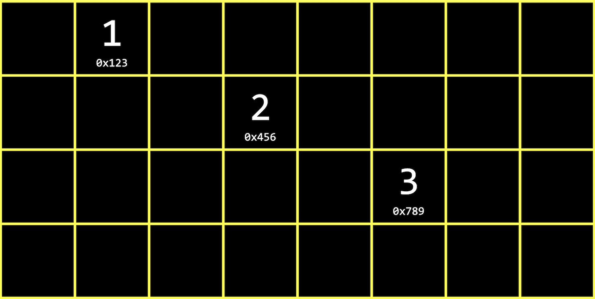
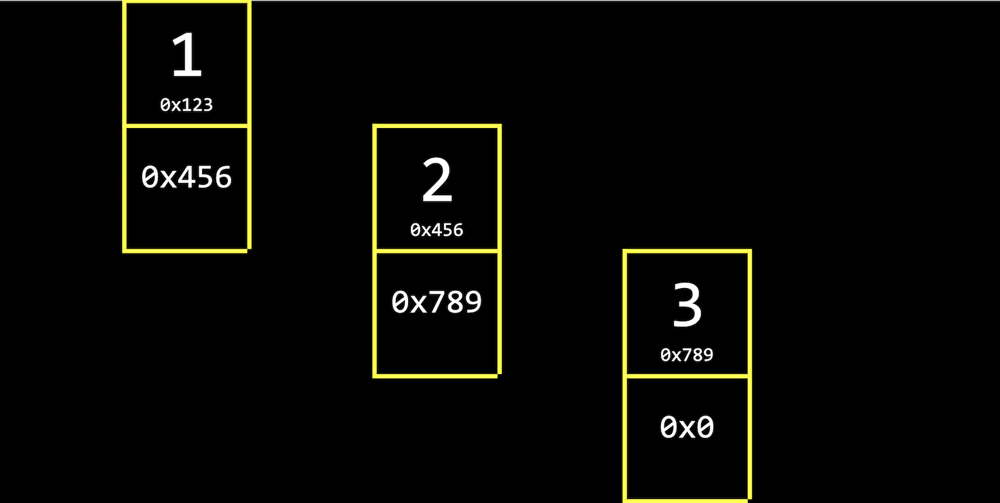
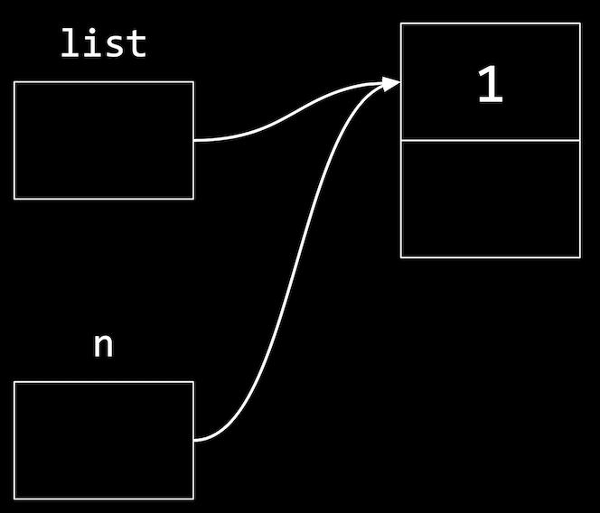
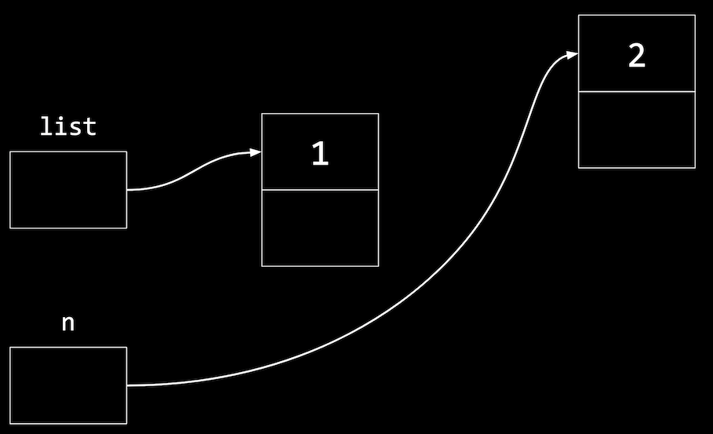
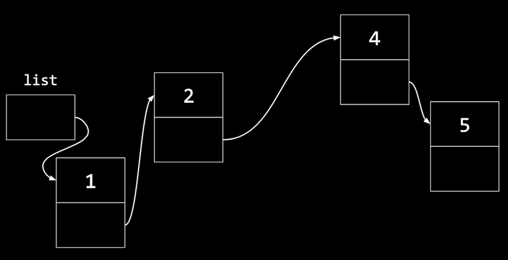
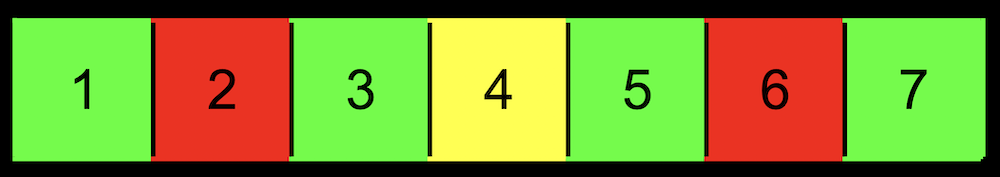
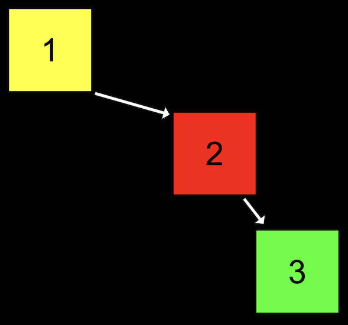
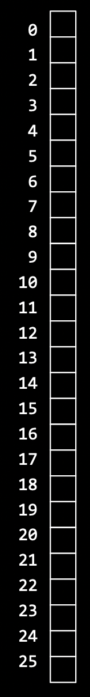

Lecture 5
- Recap
- Linked lists
- Growing arrays
- Growing linked lists
- Implementing linked lists
- Trees
- More data structures
Recap
- Next week, we’ll be introduced to another programming language, Python, where we’ll be able to build even more sophisticated programs, with less syntax.
- Last week, we learned about memory. Before that, we learned about arrays, like lists of values back-to-back in memory.
- Let’s say we have an array of three numbers, that we want to add another number to. But in our computer’s memory, there might already be another value right after, like a string:
- The free memory, containing garbage values, is represented by a cartoon Oscar.
- So one solution might be to allocate more memory where there’s enough space, and move our array there. But we’ll need to copy each of the original numbers first, and then add our new number.
- With a sorted array, we have running time of \(O(\log n)\) for search, and \(O(n)\) for insert, or adding a new value.
- The best case running times for insert and search both have \(\Omega(1)\), since we might get lucky and find our value immediately, or have free memory after our array to add a new value to.
- Recall that we’ve used these tools before:
structto create custom data types.to access fields, or values, in a structure*to go to an address in memory pointed to by a pointer->to access fields in a structure pointed to by a pointer
Linked lists
- With a linked list, we can store a list of values in different parts of memory:
- We have the values
1,2, and3, each stored in some address in memory, like0x123,0x456, and0x789. - This is different than an array since our values are no longer next to one another in memory. We can use whatever locations in memory that are free.
- We have the values
- When we want to insert a new value, we allocate enough memory for both the value we want to store, and the address of the next value:
- Next to our value of
1, for example, we also store a pointer,0x456, to the next value and pointer. (We’ll draw them vertically for visualization, but in memory the value and pointer will be adjacent.) - For our last group of boxes with value
3, we have the null pointer,0x0, since there’s no next group. - We can also visualize these addresses as just pointers, since we don’t need to know what the addresses actually are:

- Next to our value of
- With a linked list, we have the tradeoff of needing to allocate more memory for each value and pointer, in order to spend less time adding values. (When we copy an array, we do need to allocate more memory, but we free the old array once we finish copying it.)
- We’ll call the group of boxes with a value and pointer a node, a component of a data structure encapsulates some information. We can implement a node with a struct:
typedef struct node { int number; struct node *next; } node;- We start this struct with
typedef struct nodeso that we can refer to astruct nodeinside our struct. - Then, we’ll have an
intcallednumber, for the value we want to store, and then a pointer to the next node withstruct node. (We haven’t fully definednodeyet, so the compiler needs to know it’s a custom struct still.) - Finally,
nodeat the end lets us use justnodein the rest of our program.
- We start this struct with
- We can build a linked list in code starting with our struct. First, we’ll want to remember an empty list, so we can use the null pointer:
node *list = NULL;. - To add a node, we’ll first need to allocate some memory:
node *n = malloc(sizeof(node));- Recall that we can use
sizeofto get the size of some data type, including structs. We want to allocate enough memory for both a value and a pointer, and we’ll point to that withn, a pointer to anode.
- Recall that we can use
- If we were able to get memory back from
malloc, then we’ll set the value ofnumber:if (n != NULL) { (*n).number = 1; }- Since
nis a pointer, we need to go to thenodethere first, and then use the.operator to set a value. - And instead of
(*n).number, we can writen->number, which has the same effect.
- Since
- We’ll also want to set the pointer to the
nextnode to null:if (n != NULL) { n->number = 1; n->next = NULL; } - Finally, our list needs to point to the node:
list = n;:
- We want our
listpointer to have the same address asn, sincenis a temporary variable and we want ourlistvariable to refer to it as the first node in our list.
- We want our
Growing arrays
- A program that uses an array of three numbers might look like this:
#include <stdio.h> int main(void) { int list[3]; list[0] = 1; list[1] = 2; list[2] = 3; for (int i = 0; i < 3; i++) { printf("%i\n", list[i]); } }$ make list $ ./list 1 2 3 - If we wanted to have an array with memory from the heap with
malloc, our program might look like this:#include <stdio.h> #include <stdlib.h> int main(void) { int *list = malloc(3 * sizeof(int)); if (list == NULL) { return 1; } list[0] = 1; list[1] = 2; list[2] = 3; }- First, we’ll allocate enough memory for three integers and point to the first one with
int *list. (Ifmallocfails, our pointer will be null, and we’ll exit our program withreturn 1.) - Since arrays in C are equivalent to pointers, we can use the same notation to set the values in our list with
list[0],list[1], andlist[2]. The compiler will perform the correct pointer arithmetic to set values at the right addresses.
- First, we’ll allocate enough memory for three integers and point to the first one with
- Then, we’ll allocate more memory to add another value:
// Time passes int *tmp = malloc(4 * sizeof(int)); if (tmp == NULL) { free(list); return 1; } for (int i = 0; i < 3; i++) { tmp[i] = list[i]; } tmp[3] = 4;- After we allocate enough memory for four integers, we need a temporary pointer,
tmp, since we need to copy values from our original list into the new chunk of memory. (Ifmallocfails, we’ll free the original memory and exit our program withreturn 1.) - We’ll use a for loop to copy the values from
list, and set the final value intmp.
- After we allocate enough memory for four integers, we need a temporary pointer,
- Now, we free our original chunk of memory, and then set
listto point to the new list:free(list); list = tmp; for (int i = 0; i < 4; i++) { printf("%i\n", list[i]); } free(list); return 0;$ make list $ ./list 1 2 3 4- We’ll print out the list of values to demonstrate, and free it at the end of our program when we’re done with it. (Since
listnow points to the same chunk of memory astmp, we can just callfree(list). )
- We’ll print out the list of values to demonstrate, and free it at the end of our program when we’re done with it. (Since
- Finally, we can run
valgrind ./list, and see that there are no memory-related errors:$ valgrind ./list ==9764== Memcheck, a memory error detector ==9764== Copyright (C) 2002-2017, and GNU GPL'd, by Julian Seward et al. ==9764== Using Valgrind-3.15.0 and LibVEX; rerun with -h for copyright info ==9764== Command: ./list ==9764== 1 2 3 4 ==9764== ==9764== HEAP SUMMARY: ==9764== in use at exit: 0 bytes in 0 blocks ==9764== total heap usage: 2 allocs, 2 frees, 28 bytes allocated ==9764== ==9764== All heap blocks were freed -- no leaks are possible ==9764== ==9764== For lists of detected and suppressed errors, rerun with: -s ==9764== ERROR SUMMARY: 0 errors from 0 contexts (suppressed: 0 from 0) - We can add comments and use another library function,
realloc:#include <stdio.h> #include <stdlib.h> int main(void) { // Dynamically allocate an array of size 3 int *list = malloc(3 * sizeof(int)); if (list == NULL) { return 1; } // Assign three numbers to that array list[0] = 1; list[1] = 2; list[2] = 3; // Time passes // Resize old array to be of size 4 int *tmp = realloc(list, 4 * sizeof(int)); if (tmp == NULL) { free(list); return 1; } // Add fourth number to new array tmp[3] = 4; // Remember new array list = tmp; // Print new array for (int i = 0; i < 4; i++) { printf("%i\n", list[i]); } // Free new array free(list); return 0; }- Now, instead of allocating new memory and copying the old array to the new array, we can write
int *tmp = realloc(list, 4 * sizeof(int));. We pass in the pointer to the original chunk of memory, and how much memory we would like to use.reallocwill grow the original chunk for us if there’s enough free memory after it, by allocating it to the same chunk. Otherwise, it will move the chunk of memory for us to a new area, and free the original chunk of memory for us as well.
- Now, instead of allocating new memory and copying the old array to the new array, we can write
Growing linked lists
- When we have a large enough array, there might not be enough free memory contiguously, in a row, to store all of our values.
- With a linked list, we can use smaller chunks of free memory for each node, stitching them together with pointers.
- Let’s start with the list we saw earlier, with one node:

- To add to the list, we’ll create a new node the same way by allocating more memory:
n = malloc(sizeof(node)); if (n != NULL) { n->number = 2; n->next = NULL; }nis a temporary variable we use to point to this new node:

- And now we need to update the pointer in our first node to point to our new
n, since we want to maintain a sorted list:list->next = n;- This follows the pointer
list, and sets thenextfield to point to the same node asn, sincenis also a pointer:

- This follows the pointer
- To add a third node, we’ll allocate more memory again:
node *n = malloc(sizeof(node)); if (n != NULL) { n->number = 3; n->next = NULL; }- Now,
npoints to a new node in memory:

- Now,
- To insert this node in our list, we’ll want to follow the
nextpointer in the first node thatlistpoints to (the node with value1), then setting thenextpointer in that node (with value2) to point to the new node:list->next->next = n;- In general, we’ll use a loop to move through our list, but this will manually connect our nodes to look like:

- In general, we’ll use a loop to move through our list, but this will manually connect our nodes to look like:
- Even though we’re using more memory, and taking multiple steps to insert new nodes in this case (since we’re adding to the end of the list), we’re able to use small amounts of free space in memory, instead of having to look for a large chunk of contiguous memory.
Implementing linked lists
- Let’s combine our snippets of code from earlier into a program that implements a linked list. We’ll start by defining a struct called
node:#include <stdio.h> #include <stdlib.h> // Represents a node typedef struct node { int number; struct node *next; } node; - Then, we’ll allocate memory for the first node, set its values, and point
listto the new node:int main(void) { // List of size 0 node *list = NULL; // Add number to list node *n = malloc(sizeof(node)); if (n == NULL) { return 1; } n->number = 1; n->next = NULL; // Update list to point to new node list = n; } - To add a new node, we’ll reuse
nas a pointer, but allocate more memory for the second node:// Add a number to list n = malloc(sizeof(node)); if (n == NULL) { free(list); return 1; } n->number = 2; n->next = NULL; list->next = n;- If we somehow couldn’t allocate more memory, we’ll free the node in our list and exit.
- Otherwise, we’ll set the values for
n, and set the first node,list->next, to point to it.
- Now we can add a third node:
// Add a number to list n = malloc(sizeof(node)); if (n == NULL) { free(list->next); free(list); return 1; } n->number = 3; n->next = NULL; list->next->next = n;- We’re starting to see some repetition, and we’ll eventually want to use loops, but for now we’ll manually demonstrate everything.
- Notice that we need to free
list->next, the second node, and thenlist, the first node, since we need to follow it to the second node first. - Then, we’ll follow the
nextpointer in the first node, and set thenextpointer in that node to point to the new noden.
- Finally, we can print our list, and free it with a loop:
// Print numbers for (node *tmp = list; tmp != NULL; tmp = tmp->next) { printf("%i\n", tmp->number); } // Free list while (list != NULL) { node *tmp = list->next; free(list); list = tmp; } return 0;- We use a temporary pointer,
tmp, to follow each of our nodes. We’ll initialize it tolistwithnode *tmp = list, which lets us point to the first node in our list. - Then, within our loop, we can print
tmp->number. - After each iteration of the loop, we’ll update
tmptotmp->next, which is the pointer to the next node. - Finally, the loop will continue while
tmp != NULL. In other words, our loop will end whentmpis null, meaning that the current node isn’t pointing to another node. - Since
tmpis a pointer that we didn’t allocate additional memory for, we don’t need to free it. - Instead, we’ll use a loop to free our list, by using another
tmppointer to remember the next node before we free the current node. Then,free(list)will free the memory for the node thatlistpoints to. After we do that, we can setlisttotmp, the next node. Our loop will repeat untillistis null, when no more nodes are left. - Recall that we allocated the memory for an array all at once, so we can free it all at once as well. With a linked list, we’re responsible for freeing the memory for each node separately, since we allocated it separately as well.
- We use a temporary pointer,
- In Problem Set 5, we’ll further explore the implementation of linked lists, and when we learn about Python, we’ll see how the programming language will manage our memory for us.
- With a few volunteers on stage, we demonstrate linked lists. Each volunteer points at another with foam fingers, with some volunteers changing who they point to as new “nodes” as added.
- For example, we’ll add a new node,
1, that needs to be in the middle of our list:

- We’ll have to first update the
nextpointer in the node with1to point to the next node, before updatinglist:
- Our code to do this might look like:
n->next = list; list = n; - If we wrote
list = nfirst, we wouldn’t know wheren->nextshould point to.
- Our code to do this might look like:
- Similarly, to insert a node in the middle of our list, we change the
nextpointer of the new node first to point to the rest of the list, then update the previous node to point to the new node. - With a linked list, we have running time of \(O(n)\) for search, since we need to follow each node, one at a time. We won’t be able to use binary search, since we can’t calculate where all of our nodes are. Inserting a node into a sorted list will have running time of \(O(n)\) as well, since we might need to insert our node at the end. But if we didn’t want to maintain a sorted list, the running time will be \(O(1)\), since we can insert at the beginning with just one step.
- The best case running times for insert and search both have \(\Omega(1)\), since we might get lucky and find our value immediately, or be able to insert at the beginning of our list for even a sorted list.
Trees
- Recall that with a sorted array, we can use binary search to find an element, starting at the middle (yellow), then the middle of either half (red), and finally left or right (green) as needed:
- With an array, we can randomly access elements in \(O(1)\) time, since we can use arithmetic to go to an element at any index.
- A tree is another data structure where each node points to other nodes. We might have a tree where each node points to one to the left (with a smaller value) and one to the right (with a larger value):

- Notice that we now visualize this data structure in two dimensions (even though the nodes in memory can be at any location).
- Each node has not one but two pointers to other nodes. All the values to the left of a node are smaller, and all the values of nodes to the right are greater, which allows this to be used as a binary search tree.
- Each node has at most two children, or nodes it is pointing to.
- And like a linked list, we’ll want to keep a pointer to just the beginning of the list, but in this case we want to point to the root, or topmost node of the tree (the 4).
- To search for a number, we’ll start at the root node, and be able to recursively search the left or right subtree.
- The height of this tree is 3, or \(\log_2 n\), since each parent node has up to two children.
- We can define a node with not one but two pointers:
typedef struct node { int number; struct node *left; struct node *right; } node; - Let’s use that definition to write a program that uses a tree:
int main(void) { // Tree of size 0 node *tree = NULL; // Add number to list node *n = malloc(sizeof(node)); if (n == NULL) { return 1; } n->number = 2; n->left = NULL; n->right = NULL; tree = n;- First, we have a tree with no nodes, so the root is null. Then we allocate memory for a node
n, and set its value and pointers to children nodes to null. Then, we can set ourtreeto point to that node.
- First, we have a tree with no nodes, so the root is null. Then we allocate memory for a node
- To add a node, we allocate more memory for another node, and set
tree->left = n, since this node should be the left child of the root node.// Add number to list n = malloc(sizeof(node)); if (n == NULL) { free_tree(tree); return 1; } n->number = 1; n->left = NULL; n->right = NULL; tree->left = n;- We have a
free_treefunction, which we’ll see later.
- We have a
- We’ll add our third node, which will be the right child:
// Add number to list n = malloc(sizeof(node)); if (n == NULL) { free_tree(tree); return 1; } n->number = 3; n->left = NULL; n->right = NULL; tree->right = n; // Print tree print_tree(tree); // Free tree free_tree(tree); return 0; - The
print_treefunction will start at the root node, and recursively print the tree:void print_tree(node *root) { if (root == NULL) { return; } print_tree(root->left); printf("%i\n", root->number); print_tree(root->right); }- Notice that this function recursively prints the left subtree first, then the root node’s value, then the right subtree. Since all the values to the left are lower, and all the values to the right will be higher, the values will be printed in order:
$ make tree $ ./tree 1 2 3 - We can even swap
print_tree(root->left);andprint_tree(root->right);to print our tree in reverse order:void print_tree(node *root) { if (root == NULL) { return; } print_tree(root->right); printf("%i\n", root->number); print_tree(root->left); }$ make tree $ ./tree 3 2 1
- Notice that this function recursively prints the left subtree first, then the root node’s value, then the right subtree. Since all the values to the left are lower, and all the values to the right will be higher, the values will be printed in order:
- To free the memory for each of the nodes in our tree, we’ll have to recursively free both children first:
void free_tree(node *root) { if (root == NULL) { return; } free_tree(root->left); free_tree(root->right); free(root); } - We can also search our tree with an implementation of binary search:
bool search(node *tree, int number) { if (tree == NULL) { return false; } else if (number < tree->number) { return search(tree->left, number); } else if (number > tree->number) { return search(tree->right, number); } else if (number == tree->number) { return true; } }- If we don’t have any more nodes to look at, then we know the number we’re looking for isn’t in the tree, and we can return
false. - Otherwise, we can search either the left or the right subtrees.
- And if the number is at the node we’re looking at, we can return
true. - The last conditional can be simplified to
else, since there’s no other case possible.
- If we don’t have any more nodes to look at, then we know the number we’re looking for isn’t in the tree, and we can return
- If we add nodes in inefficient ways, though, our binary search tree might start to look like a linked list:
- We started our tree with a node with value of
1, then added the node with value2, and finally added the node with value3. Even though this tree follows the constraints of a binary search tree, it’s not as efficient as it could be. - We can make the tree balanced, or more optimal, by making the node with value
2the new root node.
- We started our tree with a node with value of
- With a balanced binary search tree, the running time for search and insert will be \(O(\log n)\). But if our tree isn’t balanced, it can devolve into a linked list, with running time for search and insert of \(O(n)\).
More data structures
- A hash table is a data structure that allows us to associate keys with values. It looks like an array, where we can jump to each location by its index:
 - We can think of each location as labeled with a letter from A through Z, and insert names into each location:

- If we have multiple names with the same first letter, we can add them with a linked list:

- The array has 26 pointers, some of which are null, but some pointing to a name in a node, each of which may also point to another name in another node.
- We can describe each node in code with:
typedef struct node { char word[LONGEST_WORD + 1]; struct node *next; } node;- Each node will have an array of characters already allocated, of maximum size
LONGEST_WORD + 1, calledword, that it’s storing. Then, anextpointer will point to another node, if there is one.
- Each node will have an array of characters already allocated, of maximum size
- And to create the hash table, we might write:
node *hash_table[NUMBER_OF_BUCKETS];- The hash table will be an array of pointers to nodes, with
NUMBER_OF_BUCKETSas its size.
- The hash table will be an array of pointers to nodes, with
- To decide which bucket, or location in the array, that a value should be placed in, we use a hash function, which takes some input and produces an index, or location. In our example, the hash function just returns an index corresponding to the first letter of the name, such as “0” for “Albus” and “25” for “Zacharias”.
- We might start sorting a shuffled deck of cards by dividing them into four buckets, each labeled by suit, and then sort each of the suits.
- We can try to have smaller chains in our hash table by using two letters, instead of just one:

- Now, we’ll have 676 buckets total, for all the combinations of the first two letters.
- We can consider the first three letters with even more buckets, but we’ll be using more space in memory. Some of those buckets will be empty, but we’re more likely to only need one step to look for a value, reducing our running time for searching.
- It turns out that the worst case running time for searching a hash table is \(O(n)\), since all of our values might be in the same bucket, devolving into a linked list as well. In practice, though, the running time will likely be much faster.
- We can use another data structure called a trie (pronounced like “try”, and is short for “retrieval”). A trie is a tree with arrays as nodes:

- Each array will have locations that represent each letter, A-Z.
- For each word, the first letter will point to an array, where the next valid letter will point to another array, and so on, until we reach a boolean value indicating the end of a valid word, marked in green:

- With multiple names, we start seeing some of the space being reused for the first letters that are shared:

- We might define a trie in code with:
typedef struct node { bool is_word; struct node *children[SIZE_OF_ALPHABET]; } node;- At each node, or array, we’ll have a boolean value that indicates if it’s a valid word (whether or not it should be green). Then, we’ll have an array of
SIZE_OF_ALPHABETpointers to other nodes, calledchildren.
- At each node, or array, we’ll have a boolean value that indicates if it’s a valid word (whether or not it should be green). Then, we’ll have an array of
- Now, the height of our tree is the length of the longest word we want to store.
- And even if our data structure has lots of words, the maximum lookup time will be just the length of the word we’re looking for. This might be a fixed maximum, so we have a constant time, \(O(1)\), for searching and insertion.
- The cost for this, though, is that we need lots of memory to store mostly null pointers.
- There are even higher-level constructs, abstract data structures, where we use our building blocks of arrays, linked lists, trees, hash tables, and tries to solve some other problem.
- For example, one abstract data structure is a queue, like a line of people waiting, where the first value we put in are the first values that are removed, or first-in-first-out (FIFO). To add a value we enqueue it, and to remove a value we dequeue it. We could use an array that we have to grow, or we could use a linked list.
- Another abstract data structure is a stack, where items most recently added are removed first: last-in-first-out (LIFO). In a dining hall, we might take, or pop, the top tray from a stack, and clean trays would be added, or pushed, to the top as well.
- We take a look at “Jack Learns the Facts About Queues and Stacks”, an animation about these data structures.
- A restaurant might place food orders in multiple shelves, with areas each labeled by the first letter of the customer’s name. This is an example of a dictionary, where we can map keys to values.